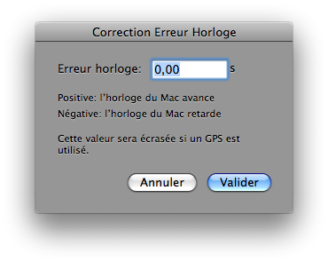
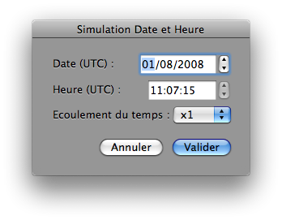

Régler la Date et l’Heure
Vous avez le choix entre utiliser l’heure du système, c’est-à-dire l’horloge du Mac, ou le temps simulé dans Lunar Eclipse Maestro en ouvrant le dialogue Simulation Date et Heure.
- Pour utiliser l’horloge du Mac, allez dans le menu Observateur, sélectionnez Heure courante… C’est le réglage à utiliser le jour de l’éclipse de lune.
-
Corrigez si nécessaire le décalage de l’horloge en allant dans le menu Configuration et sélectionnez Corriger l’horloge…

- Quand un GPS est connecté et verrouillé sur les satellites et que Utiliser le temps GPS dans le menu Configuration est activé, alors la correction de l’horloge est constamment mise à jour en utilisant les valeurs fournies par le GPS. Dans ce cas le champ n’est pas saisissable.
- Pour simuler le temps, allez dans le menu Observateur et sélectionnez Temps simulé…
-
Remplissez tous les champs.

Simuler le temps, sans affecter l’horloge interne du Mac, permet de faire une simulation longtemps avant l’éclipse.